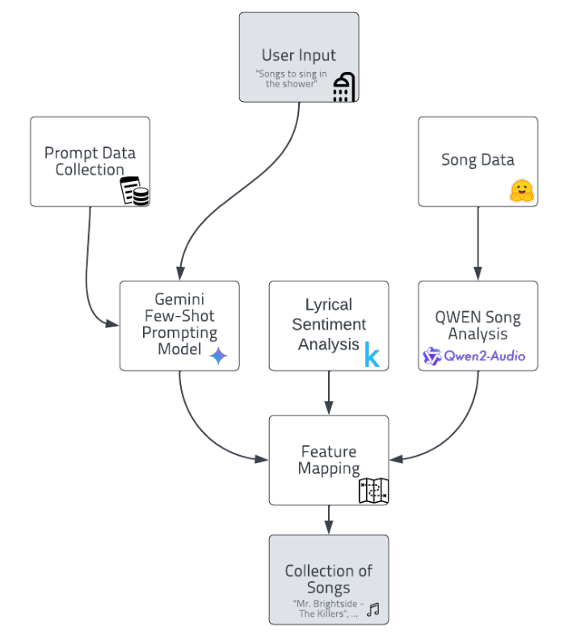
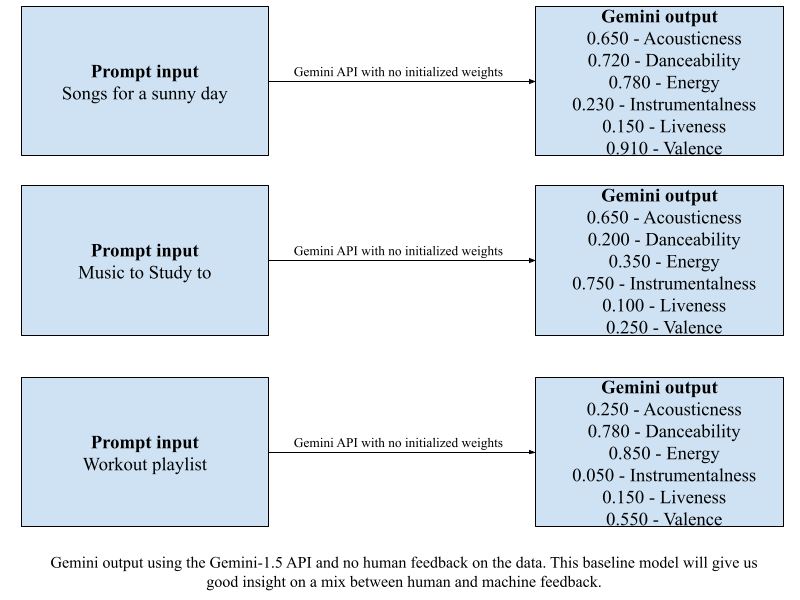
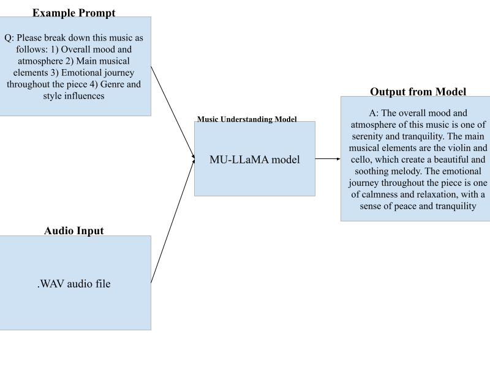

We wanted to create a novel application that would recommend songs and music playlists based on user prompts. While Spotify came out with a similar feature recently, we wanted to create an application that more readily understands the user prompt. We currently use MU-LLaMA to decipher the music audio in our datasets and extract musical features. We then tried using the Gemini API to interpret the human prompts to extract similar features from that, and we also gathered some feedback to help train the model. We do not have full results yet, however we have considerable progress in each aspect of the model.

A basic representation of how our application will prosses data to give results.
What we are trying to do
We want to create an application that would recommend songs and music playlists based on user prompts, wanting to create a more personalized and tailored experience for the user. We also wanted to discover what kind of music our application thinks very abstract prompts would sound like. For example, what would a song sound like if it was based on the prompt "a song that sounds like a sunset"? Our goal is to create something that is not affected by the user's listening history and is more based on the prompt itself while being able to handle more abstract prompts and hopefully return sensible songs.
How is it done today, and what are the limits of current practice?
Spotify has a new feature that recommends songs and playlists based on user listening history and song titles. However, the recommendations that Spotify gives are not very in-depth, and a lot of the recommendations are based on the user's listening history and song titles. Because of this, the songs they provide are not going to "catch the vibe" as it were, of the prompt given if the prompt is too abstract. There have also been plenty of studies looking into music recommendation systems, but there are still a few gaps in the research. For example, there is not much work on handling content-based prompts. Similarly, the integration of lyrical sentiment analysis with audio feature analysis has not been fully explored.
Obviously, with very abstract prompts it is extremely hard if not impossible to say whether or not a song is a good recommendation. Thus, there is a limit as to what can be expected from a music recommendation system. Furthermore, music is a very subjective medium, and because of this people will not like the songs that are recommended to them, while others may. It seems highly unlikely that we will see a music recommendation system that can perfectly predict what a user will like and wants in our lifetime. Lastly, there are an absurd number of songs within the human music library making it very difficult to create a model that can handle that much data.
Why should you care?
If we succeed, we will have created a music recommendation system that can handle abstract prompts and return sensible song suggestions. This could help people discover new music that they would not have found otherwise, along with aiding people to create playlists for moments in their lives with more ease. Our application will hopefully be able to capture more complex and metaphorical ideas than current music recommendation systems, and thus be able to recommend songs that are more in line with the user's intent. This will open up new possibilities for how people listen to music, allowing unfamiliar songs and artists to be discovered based on emotions and environment rather than just listening history.
What did you do exactly? How did you solve the problem? Why did you think it would be successful? Is anything new in your approach?
Our application was created with a simple enough pipeline in mind. First, we take the prompt given by the user and use a model to derive musical qualities and descriptors from it. Then we take the parsed descriptors and map them onto both audio a lyrical data using a separate model which extracts similar qualities and descriptors from the music dataset. We currently have two options for this, either using human feedback to train the model or using an LLM to output scores based on the human data. The LLM we are currently looking at is Gemini, which is capable of parsing features such as acousticness, danceability, etc. from the prompt given. Below is a diagram showing how this process works.
We thought this would be successful as integrating both lyrical and audio features would give us a more complete picture of the music, and thus a better recommendation. We did this using a MU-LLaMA (Music Understanding Large Language Model) model. Below is a diagram showing how this process works.
MU-LLaMA is a tool that can be used to extract musical features from audio files (specifically .wav files), while also being able to analyze lyrics in songs. The model works by feeding it an input .wav file and giving it a prompt asking for audio analysis, as shown in the diagram. As for handling abstract prompts, by parsing natural language into musical features, our application will be able to more readily understand the intent of the prompt.
What problems did you anticipate? What problems did you encounter? Did the very first thing you tried work?
So far we have not encountered any major problems. One thing we did have to consider was how to train the model that handles the user input. We need a model to parse musical features from the prompt, and we have two options. First, we could use scores from human feedback to solely train the model, which would be more efficient given the smaller scope of this project. Otherwise, we could create an LLM such as Gemini to output scores based on the human data. This would be more flexible and allow for more complex prompts, but would also be more time-consuming. We have, of course, through the planning of this project worried about one main problem: music is subjective, and thus it is extremely hard to validate results. This being said, since we have our own metric scores along with Spotify's dataset, we should be able to come up with a reasonably effective metric. Using human feedback instead of the Spotify dataset is looking to be the way we will go at the moment. Either way, we will be trying both options in the hope of finding the best solution. For audio engineering, MU-LLaMA is extremely effective, however does have some limitations. For example, when given audio from popular meme culture, the model depicts a sad violin playing, given it has no cultural context. We have also tried to obtain song lyrics from datasets but found this to not be feasible, so web scraping seems to be our only option.
Before we had a working demo we had some preliminary results from various parts of our application. As for the audio parsing model, we had an experimental model using MU-LLaMA working that can obtain musical features from .wav files. (This is described in more detail in the Approach section.) For the human prompt, we had a working Gemini model that is capable of parsing features such as acoustics, danceability, etc. from the prompt given. This model is capable of handling abstract prompts, however, we were not able to verify the correctness of these results at the time. Lastly, a survey was conducted to gather human feedback on prompt features using the same tags as the Gemini model. These are the results discussed in the previous section about issues.
| Prompt | Number of responses | Acoustic Mean | Danceability Mean | Energy Mean | Instrumentalness Mean | Liveness Mean | Valence Mean |
|---|---|---|---|---|---|---|---|
| Songs for a sunny day | 5 | 6.2 | 8.4 | 8.4 | 3.8 | 3.8 | 9.6 |
| Music to study to | 5 | 7.0 | 2.2 | 4.0 | 8.4 | 2.2 | 5.2 |
| Songs for a party | 5 | 2.2 | 10.0 | 10.0 | 2.2 | 2.0 | 9.2 |
| Chill Music Before Bed | 5 | 7.8 | 3.2 | 2.0 | 6.4 | 3.0 | 4.4 |
| Workout playlist | 5 | 2.2 | 9.6 | 10.0 | 2.4 | 2.0 | 8.2 |
| Romantic Dinner Songs | 11 | 7.3 | 5.0 | 3.4 | 4.6 | 3.7 | 7.4 |
| Sad Love Songs | 11 | 7.3 | 2.0 | 2.5 | 4.5 | 2.9 | 1.1 |
| Winter Music | 11 | 6.5 | 4.3 | 5.3 | 5.7 | 3.7 | 6.5 |
| Songs for a rainy day | 11 | 7.2 | 3.5 | 3.0 | 6.0 | 4.9 | 3.5 |
| Jazz Classics | 11 | 7.6 | 7.7 | 7.4 | 8.9 | 6.9 | 6.4 |
| Backyard barbecue | 7 | 3.6 | 4.9 | 6.1 | 3.4 | 3.7 | 9.1 |
| Nostalgic hits | 7 | 3.9 | 7.6 | 7.7 | 3.2 | 2.3 | 8.0 |
| Fall songs | 7 | 6.9 | 3.3 | 4.3 | 5.9 | 4.1 | 4.1 |
| Late night driving | 7 | 5.3 | 5.3 | 6.0 | 5.4 | 2.3 | 5.4 |
| Good vibes pop | 7 | 2.7 | 8.6 | 8.1 | 2.9 | 2.6 | 9.7 |
| Pregame jams | 6 | 2.7 | 9.3 | 9.3 | 3.2 | 2.3 | 9.7 |
| Sleepy music | 6 | 8.0 | 1.7 | 1.7 | 7.0 | 2.0 | 5.3 |
| Spring hits | 6 | 5.8 | 6.3 | 7.0 | 3.7 | 5.5 | 7.7 |
| Calm focus playlist | 6 | 7.8 | 1.5 | 2.8 | 7.8 | 1.8 | 5.5 |
| Sleepless midnight | 6 | 5.3 | 4.7 | 4.7 | 4.3 | 4.3 | 4.0 |
Here we have the comparisons from the peer responses and the Gemini Outputs.
fudkd
Because our application is limited in scope, an eventual increase in the dataset of recommendable songs would be a good next step. This would allow for more accurate recommendations and would make the application more useful. Another big thing that we would like to implement is to have more user feedback to on the model's accuracy. This would allow us to improve the model in all aspects, from the prompt mood analysis to each song's given features. Overall, however, we are very happy with the progress we have made so far, with the working demo and the results we have gathered from it. Those results are also fairly easy to reproduce, as the demo is available to anyone who wants to try it. All of the code used to create the demo is on our GitHub page, so anyone can see how we created the application, and can easily reproduce the model should they want to.